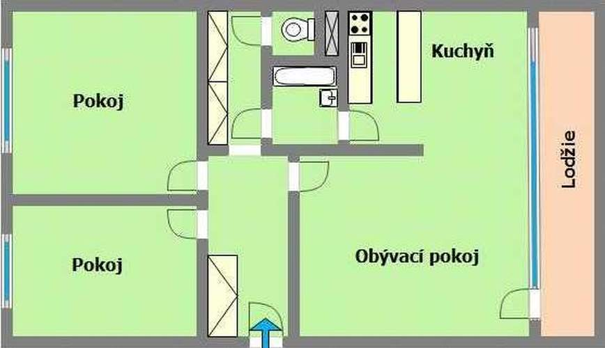
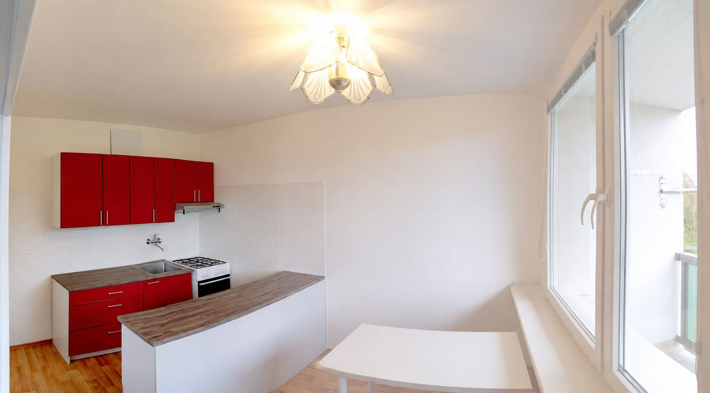
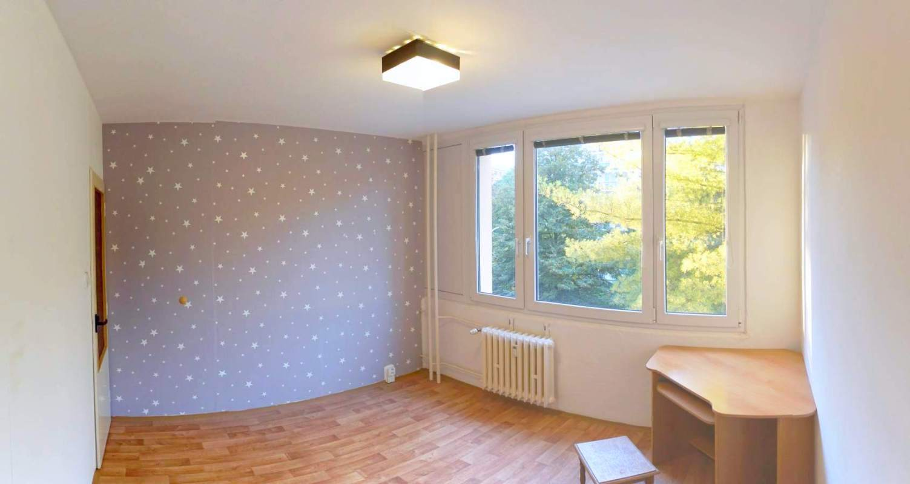
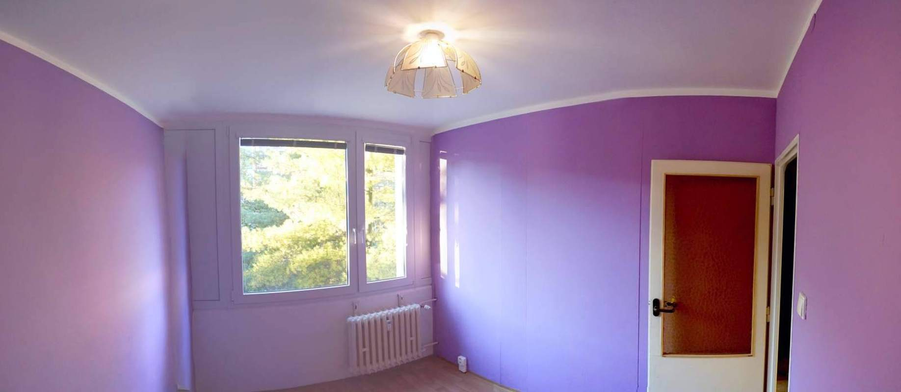

Podnájem družstevního bytu 3+1 s lodžií o celkové ploše přibližně 60,5 m² v atraktivní a klidné části Prahy 9 – Prosek. Byt se nachází ve 3. patře kompletně revitalizovaného panelového domu s výtahem.
Interiér prošel částečnou rekonstrukcí: má plastová okna se žaluziemi, nové podlahy, kuchyňskou linku na míru a v části bytu nové elektroinstalace. Jihovýchodně orientovaná lodžie nabízí otevřený výhled do zeleně.
✓ Klidná lokalita plná zeleně
✓ Velká lodžie s výhledem
✓ Prostorná kuchyň na míru
✓ Zateplený dům s výtahem
✓ Výborná dopravní dostupnost
✓ Kompletní občanská vybavenost

Orientační dispozice bytu
Fotogalerie
Prosvětlený interiér a výhled do zeleně
Obývací pokoj

KuchyňVýhled z lodžie

Menší pokoj

Ložnice
Fotografie jsou staršího data; aktuální barva výmalby a stav vybavení se mohou mírně lišit.
Podmínky pronájmu
Přehledné náklady bez skrytých překvapení
Preferujeme dlouhodobý pronájem nejméně na jeden rok, s možností prodloužení při oboustranné spokojenosti.
Nájemné19 650 Kč
Zálohy na službycca 5 000 Kč
Elektřina a plyncca 1 200 Kč
Celkem pro 2 osobycca 25 850 Kč / měsíc
Kauce 32 000 Kč, splatná při podpisu smlouvy.
Lokalita
Vše potřebné v pěší vzdálenosti
Školka je přímo před domem. V okolí najdete školy, gymnázia, polikliniku, obchody, sportoviště, venkovní posilovnu i rozsáhlý Park Přátelství. Parkování je možné před domem.
Metro C Prosek a Střížkov
Parky, hřiště a sportoviště
Obchody a zdravotní péče
Máte zájem?
Napište nám několik slov o sobě
Uveďte prosím, od kdy a na jak dlouho chcete v bytě bydlet, počet osob, zda někdo kouří a zda máte domácí zvíře. Pomůže nám to rychleji domluvit vhodný termín prohlídky.